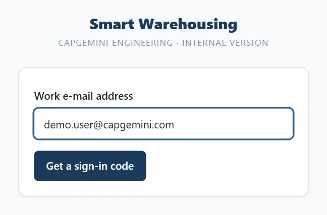
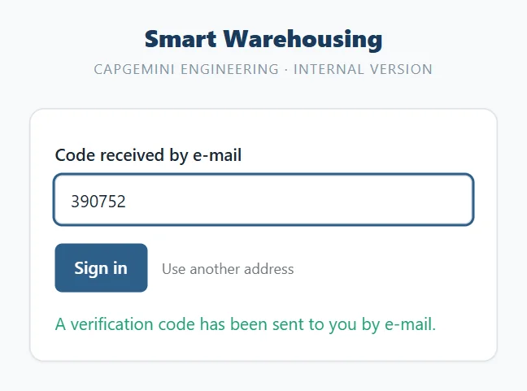
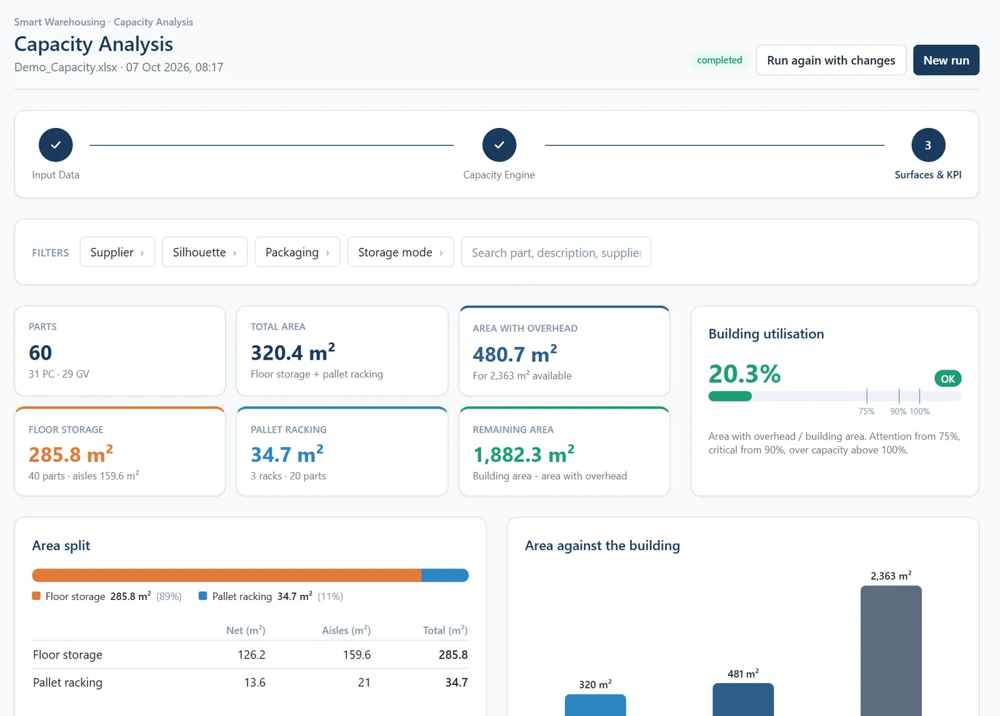
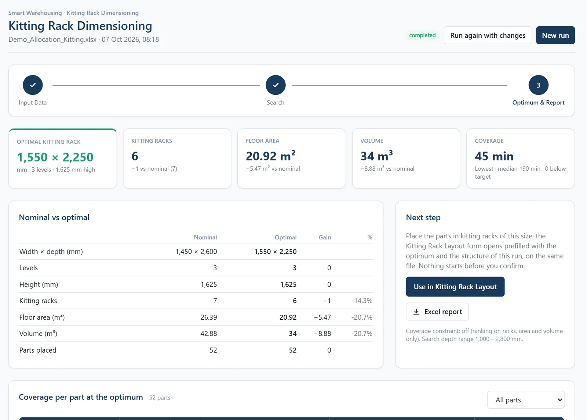
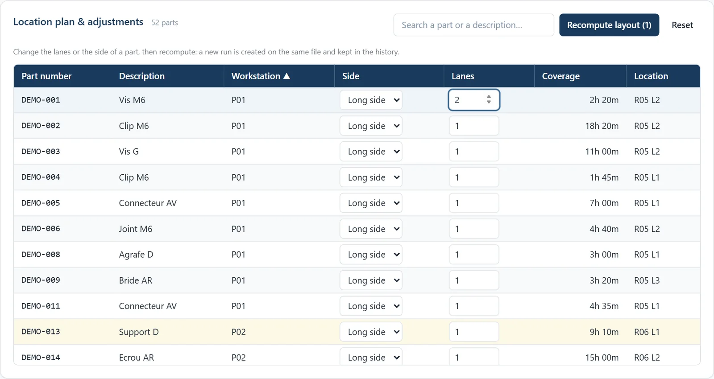
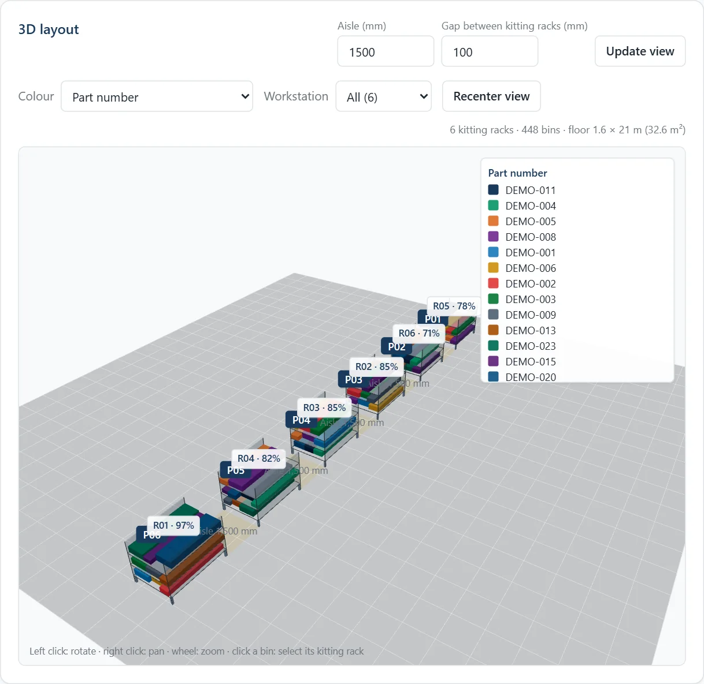
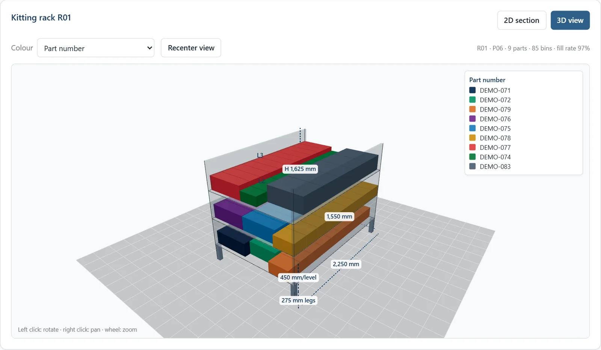
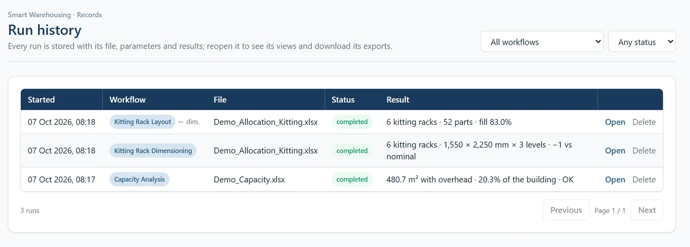
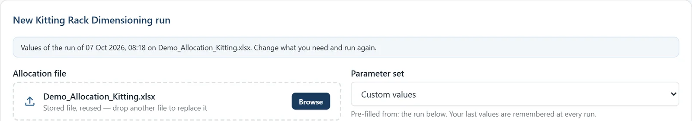

GUIDE UTILISATEUR
Smart Warehousing Platform
Manuel d'utilisation de la plateforme avant-projet logistique
Capacity Analysis · Kitting Rack Dimensioning · Kitting Rack Layout · Historique
Sommaire
- 1.À propos de la plateformep. 3
- 2.Accès & repères d'interfacep. 4
- 3.Préparer les fichiers Excelp. 5
- 4.Domaine 1 - Capacity Analysisp. 6
- 5.Domaine 2 - Kitting Rack Dimensioningp. 7
- 6.Domaine 3 - Kitting Rack Layout (implantation, 3D)p. 8-9
- 7.Historique, jeux de paramètres & exportsp. 10-11
- 8.Dépannage & glossairep. 12
À propos de la plateforme
Ce que l'outil fait, et dans quel ordre
La plateforme couvre l'avant-projet logistique en trois workflows enchaînés. Chaque exécution est enregistrée (fichier, paramètres, résultats) et se rouvre depuis l'historique.
Capacity Analysis
Calcule les surfaces de stockage au sol et en palettiers à partir du classeur capacitaire.
Kitting Rack Dimensioning
Cherche la largeur, la profondeur et le nombre de niveaux optimaux du meuble kitting.
Kitting Rack Layout
Place chaque référence dans les meubles kitting : plan d'implantation, vue 3D, Excel et DXF.
Accès & repères d'interface
Se connecter et s'orienter
Ouvrir la plateforme dans le navigateur
Adresse fournie par l'équipe.
Saisir l'e-mail professionnel
Domaine autorisé requis, puis « Get a sign-in code ».
Saisir le code à 6 chiffres
Reçu par e-mail, puis « Sign in ».
Naviguer via le menu latéral
Home, les 3 workflows et « History » ; « Sign out » en bas.
Bon à savoir
Tout est enregistré en base, par utilisateur : fichiers, paramètres et résultats se retrouvent dans « History ».


Préparer les fichiers Excel
Deux fichiers, des colonnes attendues
Chaque workflow propose son modèle (lien « Download the … template »). Les fichiers clients en français restent acceptés : la correspondance des colonnes s'affiche dans « Column mapping ».
Classeur capacitaire - feuille « OUTPUT »
Une ligne par référence à stocker.
RéférencesDésignationTypologie emballageLongueur (mm)Largeur (mm)Hauteur (mm)Gerbabilité% MonteNbr de pièces (SNP)Simul Nbr jours de stockSol/Palettier (prioritaire)Piles par file
Fichier d'affectation - feuille « Affectation »
Une ligne par référence affectée à un poste (workflows 2 et 3).
POSTERéférencesDésignationType EmballageLongueurLargeurHauteurNbr pcs/EmbCoeffPoidsPoids RéelTaux de MonteOrientationNb couloirsCouverture cible (min)
Capacity Analysis
Obtenir les surfaces au sol & en palettiers
Charger le classeur capacitaire (OUTPUT)
Glisser-déposer, ou réutiliser le fichier stocké.
Choisir un jeu de paramètres
Production, bâtiment, manutention, palettiers…
Cliquer « Run Capacity Analysis »
Résultat en quelques secondes, enregistré.
Parcourir les 3 étapes
Input Data · Capacity Engine · Surfaces & KPI.
Résultat clé
« Building utilisation » compare la surface majorée (« With overhead ») à la surface du bâtiment : elle indique si la zone tient dans l'enveloppe.

Kitting Rack Dimensioning
Trouver le meuble kitting optimal
Charger le fichier d'affectation
Feuille « Affectation », commune avec le Layout.
Régler l'espace de recherche
Search space, structure, ergonomie, scoring…
Cliquer « Run Kitting Rack Dimensioning »
Des centaines de configurations évaluées.
Comparer au nominal
Le bloc « Nominal vs optimal » chiffre le gain.
Étape suivante
« Use in Kitting Rack Layout » ouvre le Layout prérempli avec l'optimum ; « Excel report » exporte le détail.

Kitting Rack Layout - Implantation
Plan de localisation et ajustements
Cliquer « Run Kitting Rack Layout »
Les références sont réparties dans les meubles.
Consulter le plan de localisation
Étape « Layout Engine » : côté, couloirs, couverture.
Ajuster le côté ou les couloirs
Puis « Recompute layout ».
Contrôler les objectifs
Remplissage et contraintes respectées.
Bon à savoir
Chaque recalcul crée une nouvelle exécution sur le même fichier : l'original reste dans l'historique.

Kitting Rack Layout - 3D & KPI
Visualiser et exporter l'implantation
Ouvrir l'étape « 3D Layout & KPI »
Surface, volume, remplissage, couverture.
Explorer la vue 3D
Couleur par référence, poste, côté ou poids.
Sélectionner un meuble
« 2D section » ou « 3D view » cotée.
Régler allée et écart
Puis « Update view » : surface au sol recalculée.
Exports disponibles
Plan de localisation Excel (avec coupes 2D) et fichier DXF pour AutoCAD.


Historique & jeux de paramètres
Retrouver, rejouer, réutiliser
Ouvrir « History »
Exécutions filtrables par workflow et statut.
Rouvrir une exécution
« Open » : résultats et exports régénérés.
Rejouer avec des changements
« Run again with changes » : fichier et paramètres repris.
Enregistrer un jeu de paramètres
« Save as set » ; vos dernières valeurs sont mémorisées.
Bon à savoir
Chaque utilisateur ne voit que ses propres exécutions, fichiers et jeux de paramètres.


Exports & livrables
Ce que vous pouvez produire
Capacity Analysis
Rapport Excel des surfaces · tableaux filtrables à l'écran.
Kitting Rack Dimensioning
Rapport Excel détaillé (configurations, références).
Kitting Rack Layout
Plan de localisation Excel (avec coupes 2D) · DXF AutoCAD.
Historique
Exports régénérés à la demande depuis toute exécution passée.
À venir · IA générative
CDC et analyse fournisseurs : agents / apps d'IA générative, selon l'environnement ou la licence client.
Dépannage & glossaire
Problèmes courants et termes métier
Problèmes courants
- « Colonnes manquantes »
- Repartir du modèle Excel et vérifier les en-têtes.
- Exécution « failed »
- Le message reste dans l'historique : corriger le fichier, relancer.
- Code de connexion refusé
- Code expiré ou trop d'essais : en redemander un.
- Résultats disparus
- Ils sont en base : les retrouver dans « History ».
Glossaire
- Couverture
- Durée d'autonomie d'une référence (jours-heures-minutes).
- Couloir
- Colonne d'un meuble dédiée à une référence (« lane »).
- Nominal vs optimal
- Config de référence comparée à la config calculée.
- Jeu de paramètres
- Valeurs enregistrées et réutilisables (« parameter set »).
← → pour naviguer · F plein écran